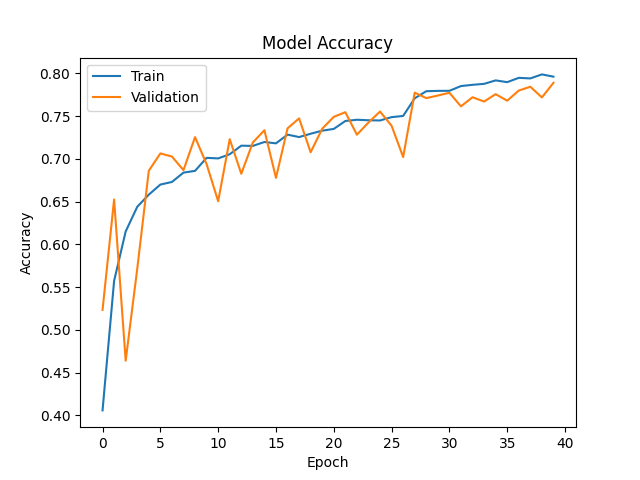
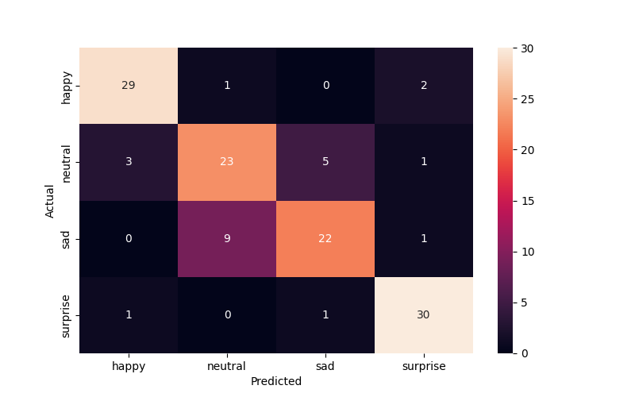
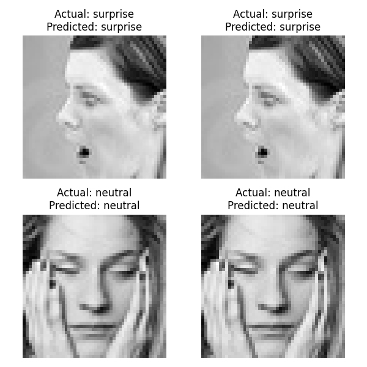

        <html>
        <head><title>Model Summary - 2024-04-10 14:47:47</title></head>
        <body>
        <h1>Model Configuration</h1>
        <pre>model:
  compile:
    learning_rate: 0.001
    optimizer: Adam
    optimizer_name: adam
  data:
    color_layers: 1
    color_mode: grayscale
    img_height: 48
    img_width: 48
    use_data_loaders: true
  layers:
  - filters: 64
    kernel_size:
    - 2
    - 2
    padding: same
    type: Conv2D
  - type: BatchNormalization
  - alpha: 0.1
    type: LeakyReLU
  - pool_size:
    - 2
    - 2
    type: MaxPooling2D
  - filters: 128
    kernel_size:
    - 2
    - 2
    padding: same
    type: Conv2D
  - type: BatchNormalization
  - alpha: 0.1
    type: LeakyReLU
  - pool_size:
    - 2
    - 2
    type: MaxPooling2D
  - filters: 256
    kernel_size:
    - 2
    - 2
    padding: same
    type: Conv2D
  - type: BatchNormalization
  - alpha: 0.1
    type: LeakyReLU
  - pool_size:
    - 2
    - 2
    type: MaxPooling2D
  - filters: 512
    kernel_size:
    - 2
    - 2
    padding: same
    type: Conv2D
  - type: BatchNormalization
  - alpha: 0.1
    type: LeakyReLU
  - pool_size:
    - 2
    - 2
    type: MaxPooling2D
  - filters: 128
    kernel_size:
    - 2
    - 2
    padding: same
    type: Conv2D
  - type: BatchNormalization
  - alpha: 0.1
    type: LeakyReLU
  - pool_size:
    - 2
    - 2
    type: MaxPooling2D
  - type: Flatten
  - activation: relu
    type: Dense
    units: 512
  - activation: relu
    type: Dense
    units: 128
  - type: Dense
    units: 64
  - type: BatchNormalization
  - type: ReLU
  - activation: softmax
    type: Dense
    units: 4
  train:
    batch_size: 32
    epochs: 40
    patience: 7
</pre>
        <h1>Model Summary</h1>
        <pre>Model: "sequential"
┏━━━━━━━━━━━━━━━━━━━━━━━━━━━━━━━━━━━━━━┳━━━━━━━━━━━━━━━━━━━━━━━━━━━━━┳━━━━━━━━━━━━━━━━━┓
┃ Layer (type)                         ┃ Output Shape                ┃         Param # ┃
┡━━━━━━━━━━━━━━━━━━━━━━━━━━━━━━━━━━━━━━╇━━━━━━━━━━━━━━━━━━━━━━━━━━━━━╇━━━━━━━━━━━━━━━━━┩
│ conv2d (Conv2D)                      │ (None, 48, 48, 64)          │             320 │
├──────────────────────────────────────┼─────────────────────────────┼─────────────────┤
│ batch_normalization                  │ (None, 48, 48, 64)          │             256 │
│ (BatchNormalization)                 │                             │                 │
├──────────────────────────────────────┼─────────────────────────────┼─────────────────┤
│ leaky_re_lu (LeakyReLU)              │ (None, 48, 48, 64)          │               0 │
├──────────────────────────────────────┼─────────────────────────────┼─────────────────┤
│ max_pooling2d (MaxPooling2D)         │ (None, 24, 24, 64)          │               0 │
├──────────────────────────────────────┼─────────────────────────────┼─────────────────┤
│ conv2d_1 (Conv2D)                    │ (None, 24, 24, 128)         │          32,896 │
├──────────────────────────────────────┼─────────────────────────────┼─────────────────┤
│ batch_normalization_1                │ (None, 24, 24, 128)         │             512 │
│ (BatchNormalization)                 │                             │                 │
├──────────────────────────────────────┼─────────────────────────────┼─────────────────┤
│ leaky_re_lu_1 (LeakyReLU)            │ (None, 24, 24, 128)         │               0 │
├──────────────────────────────────────┼─────────────────────────────┼─────────────────┤
│ max_pooling2d_1 (MaxPooling2D)       │ (None, 12, 12, 128)         │               0 │
├──────────────────────────────────────┼─────────────────────────────┼─────────────────┤
│ conv2d_2 (Conv2D)                    │ (None, 12, 12, 256)         │         131,328 │
├──────────────────────────────────────┼─────────────────────────────┼─────────────────┤
│ batch_normalization_2                │ (None, 12, 12, 256)         │           1,024 │
│ (BatchNormalization)                 │                             │                 │
├──────────────────────────────────────┼─────────────────────────────┼─────────────────┤
│ leaky_re_lu_2 (LeakyReLU)            │ (None, 12, 12, 256)         │               0 │
├──────────────────────────────────────┼─────────────────────────────┼─────────────────┤
│ max_pooling2d_2 (MaxPooling2D)       │ (None, 6, 6, 256)           │               0 │
├──────────────────────────────────────┼─────────────────────────────┼─────────────────┤
│ conv2d_3 (Conv2D)                    │ (None, 6, 6, 512)           │         524,800 │
├──────────────────────────────────────┼─────────────────────────────┼─────────────────┤
│ batch_normalization_3                │ (None, 6, 6, 512)           │           2,048 │
│ (BatchNormalization)                 │                             │                 │
├──────────────────────────────────────┼─────────────────────────────┼─────────────────┤
│ leaky_re_lu_3 (LeakyReLU)            │ (None, 6, 6, 512)           │               0 │
├──────────────────────────────────────┼─────────────────────────────┼─────────────────┤
│ max_pooling2d_3 (MaxPooling2D)       │ (None, 3, 3, 512)           │               0 │
├──────────────────────────────────────┼─────────────────────────────┼─────────────────┤
│ conv2d_4 (Conv2D)                    │ (None, 3, 3, 128)           │         262,272 │
├──────────────────────────────────────┼─────────────────────────────┼─────────────────┤
│ batch_normalization_4                │ (None, 3, 3, 128)           │             512 │
│ (BatchNormalization)                 │                             │                 │
├──────────────────────────────────────┼─────────────────────────────┼─────────────────┤
│ leaky_re_lu_4 (LeakyReLU)            │ (None, 3, 3, 128)           │               0 │
├──────────────────────────────────────┼─────────────────────────────┼─────────────────┤
│ max_pooling2d_4 (MaxPooling2D)       │ (None, 1, 1, 128)           │               0 │
├──────────────────────────────────────┼─────────────────────────────┼─────────────────┤
│ flatten (Flatten)                    │ (None, 128)                 │               0 │
├──────────────────────────────────────┼─────────────────────────────┼─────────────────┤
│ dense (Dense)                        │ (None, 512)                 │          66,048 │
├──────────────────────────────────────┼─────────────────────────────┼─────────────────┤
│ dense_1 (Dense)                      │ (None, 128)                 │          65,664 │
├──────────────────────────────────────┼─────────────────────────────┼─────────────────┤
│ dense_2 (Dense)                      │ (None, 64)                  │           8,256 │
├──────────────────────────────────────┼─────────────────────────────┼─────────────────┤
│ batch_normalization_5                │ (None, 64)                  │             256 │
│ (BatchNormalization)                 │                             │                 │
├──────────────────────────────────────┼─────────────────────────────┼─────────────────┤
│ re_lu (ReLU)                         │ (None, 64)                  │               0 │
├──────────────────────────────────────┼─────────────────────────────┼─────────────────┤
│ dense_3 (Dense)                      │ (None, 4)                   │             260 │
└──────────────────────────────────────┴─────────────────────────────┴─────────────────┘
 Total params: 1,096,452 (4.18 MB)
 Trainable params: 1,094,148 (4.17 MB)
 Non-trainable params: 2,304 (9.00 KB)
</pre>
        <h2>Test Accuracy</h2>
        <p>
1/4 ━━━━━━━━━━━━━━━━━━━━ 0s 18ms/step - accuracy: 0.9062 - loss: 0.2705
4/4 ━━━━━━━━━━━━━━━━━━━━ 0s 5ms/step - accuracy: 0.8229 - loss: 0.4772 

1/4 ━━━━━━━━━━━━━━━━━━━━ 1s 422ms/step
4/4 ━━━━━━━━━━━━━━━━━━━━ 0s 4ms/step  
</p>
        <h2>Accuracy Plot</h2>
        
        <h2>Classification Report</h2>
        <pre>              precision    recall  f1-score   support

       happy       0.88      0.91      0.89        32
     neutral       0.70      0.72      0.71        32
         sad       0.79      0.69      0.73        32
    surprise       0.88      0.94      0.91        32

    accuracy                           0.81       128
   macro avg       0.81      0.81      0.81       128
weighted avg       0.81      0.81      0.81       128

</pre>
        <h2>History</h2>
        <pre>Epoch 1: accuracy: 0.4059, loss: 1.2600, val_accuracy: 0.5234, val_loss: 1.0727, learning_rate: 0.0010
Epoch 2: accuracy: 0.5573, loss: 1.0246, val_accuracy: 0.6524, val_loss: 0.8268, learning_rate: 0.0010
Epoch 3: accuracy: 0.6150, loss: 0.9077, val_accuracy: 0.4639, val_loss: 1.1911, learning_rate: 0.0010
Epoch 4: accuracy: 0.6439, loss: 0.8497, val_accuracy: 0.5712, val_loss: 1.0972, learning_rate: 0.0010
Epoch 5: accuracy: 0.6581, loss: 0.8154, val_accuracy: 0.6860, val_loss: 0.7976, learning_rate: 0.0010
Epoch 6: accuracy: 0.6699, loss: 0.7978, val_accuracy: 0.7062, val_loss: 0.7362, learning_rate: 0.0010
Epoch 7: accuracy: 0.6729, loss: 0.7883, val_accuracy: 0.7026, val_loss: 0.7451, learning_rate: 0.0010
Epoch 8: accuracy: 0.6838, loss: 0.7606, val_accuracy: 0.6868, val_loss: 0.7729, learning_rate: 0.0010
Epoch 9: accuracy: 0.6859, loss: 0.7523, val_accuracy: 0.7253, val_loss: 0.6907, learning_rate: 0.0010
Epoch 10: accuracy: 0.7011, loss: 0.7332, val_accuracy: 0.6938, val_loss: 0.7824, learning_rate: 0.0010
Epoch 11: accuracy: 0.7004, loss: 0.7270, val_accuracy: 0.6504, val_loss: 0.9300, learning_rate: 0.0010
Epoch 12: accuracy: 0.7053, loss: 0.7212, val_accuracy: 0.7229, val_loss: 0.6928, learning_rate: 0.0010
Epoch 13: accuracy: 0.7153, loss: 0.7035, val_accuracy: 0.6825, val_loss: 0.7988, learning_rate: 0.0010
Epoch 14: accuracy: 0.7151, loss: 0.7007, val_accuracy: 0.7191, val_loss: 0.6843, learning_rate: 0.0010
Epoch 15: accuracy: 0.7196, loss: 0.6772, val_accuracy: 0.7334, val_loss: 0.6589, learning_rate: 0.0010
Epoch 16: accuracy: 0.7180, loss: 0.6895, val_accuracy: 0.6777, val_loss: 0.8378, learning_rate: 0.0010
Epoch 17: accuracy: 0.7282, loss: 0.6763, val_accuracy: 0.7356, val_loss: 0.6755, learning_rate: 0.0010
Epoch 18: accuracy: 0.7254, loss: 0.6672, val_accuracy: 0.7472, val_loss: 0.6281, learning_rate: 0.0010
Epoch 19: accuracy: 0.7293, loss: 0.6668, val_accuracy: 0.7077, val_loss: 0.7512, learning_rate: 0.0010
Epoch 20: accuracy: 0.7329, loss: 0.6521, val_accuracy: 0.7352, val_loss: 0.6420, learning_rate: 0.0010
Epoch 21: accuracy: 0.7349, loss: 0.6529, val_accuracy: 0.7490, val_loss: 0.6226, learning_rate: 0.0010
Epoch 22: accuracy: 0.7442, loss: 0.6334, val_accuracy: 0.7545, val_loss: 0.6021, learning_rate: 0.0010
Epoch 23: accuracy: 0.7456, loss: 0.6304, val_accuracy: 0.7281, val_loss: 0.6712, learning_rate: 0.0010
Epoch 24: accuracy: 0.7451, loss: 0.6302, val_accuracy: 0.7424, val_loss: 0.6418, learning_rate: 0.0010
Epoch 25: accuracy: 0.7448, loss: 0.6245, val_accuracy: 0.7553, val_loss: 0.6031, learning_rate: 0.0010
Epoch 26: accuracy: 0.7487, loss: 0.6247, val_accuracy: 0.7386, val_loss: 0.6393, learning_rate: 0.0010
Epoch 27: accuracy: 0.7501, loss: 0.6121, val_accuracy: 0.7020, val_loss: 0.7311, learning_rate: 0.0010
Epoch 28: accuracy: 0.7707, loss: 0.5696, val_accuracy: 0.7774, val_loss: 0.5675, learning_rate: 0.0002
Epoch 29: accuracy: 0.7790, loss: 0.5522, val_accuracy: 0.7709, val_loss: 0.5797, learning_rate: 0.0002
Epoch 30: accuracy: 0.7794, loss: 0.5510, val_accuracy: 0.7740, val_loss: 0.5688, learning_rate: 0.0002
Epoch 31: accuracy: 0.7795, loss: 0.5456, val_accuracy: 0.7772, val_loss: 0.5688, learning_rate: 0.0002
Epoch 32: accuracy: 0.7850, loss: 0.5422, val_accuracy: 0.7613, val_loss: 0.5916, learning_rate: 0.0002
Epoch 33: accuracy: 0.7865, loss: 0.5324, val_accuracy: 0.7720, val_loss: 0.5664, learning_rate: 0.0002
Epoch 34: accuracy: 0.7876, loss: 0.5338, val_accuracy: 0.7669, val_loss: 0.5798, learning_rate: 0.0002
Epoch 35: accuracy: 0.7916, loss: 0.5274, val_accuracy: 0.7756, val_loss: 0.5735, learning_rate: 0.0002
Epoch 36: accuracy: 0.7896, loss: 0.5262, val_accuracy: 0.7679, val_loss: 0.5809, learning_rate: 0.0002
Epoch 37: accuracy: 0.7946, loss: 0.5148, val_accuracy: 0.7798, val_loss: 0.5720, learning_rate: 0.0002
Epoch 38: accuracy: 0.7940, loss: 0.5166, val_accuracy: 0.7842, val_loss: 0.5496, learning_rate: 0.0002
Epoch 39: accuracy: 0.7987, loss: 0.5110, val_accuracy: 0.7718, val_loss: 0.5802, learning_rate: 0.0002
Epoch 40: accuracy: 0.7960, loss: 0.5138, val_accuracy: 0.7888, val_loss: 0.5405, learning_rate: 0.0002
</pre>
        <h2>Confusion Matrix</h2>
        
        <h2>Predicted Images</h2>
        
        </body>
        </html>
        